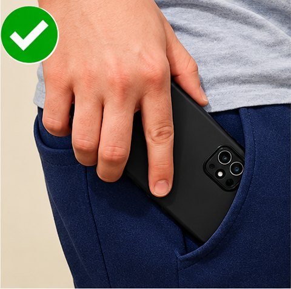
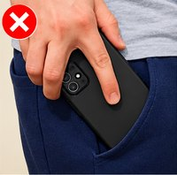
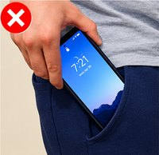
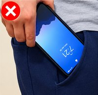

Preparing your training
Your phone can connect while the studio loads.




- 1Right front pocket
- 2Screen facing your leg
- 3Top of the phone goes in first
—
Connection help
Microphone permission can help your browser connect locally. Access opens briefly and stops immediately. No audio is recorded or sent.
Keep both screens open on the same Wi-Fi. Avoid guest Wi-Fi or a VPN.